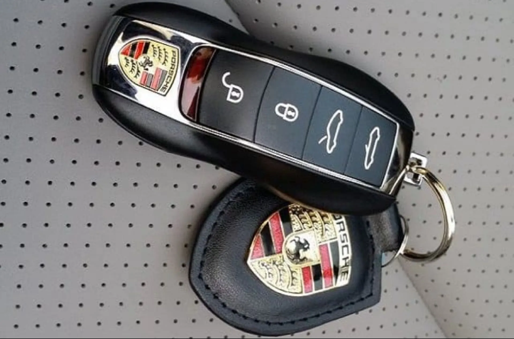

Ключі Porsche в Ужгороді — виготовлення smart-ключів і дублікатів

Виготовляємо ключі Porsche для всіх моделей: Cayenne (955, 957, 958, 9YA, 9YB), Macan, Panamera (970, 971), 911 (997, 991, 992), Boxster (987, 981, 982), Cayman (987, 981, 982), Taycan, новий 718. Porsche входить у концерн Volkswagen Group, тому використовує ті самі чіпи що VAG: ID48 Megamos у старіших моделях та Megamos AES у нових (Cayenne III, Macan, Panamera II, 992, Taycan). Лезо стандартне VAG — HU66. Програмування — через AVDI Abrites, VVDI Key Tool Plus, Autel IM608 PRO.
Потрібен ключ Porsche?
Зателефонуйте — підкажемо точну ціну і час за моделлю
З якими моделями Porsche ми працюємо
- Porsche Cayenne 955, 957 (2002-2010)
- Porsche Cayenne 958 (2010-2017)
- Porsche Cayenne 9YA, 9YB (2017+) — Megamos AES
- Porsche Macan (2014+)
- Porsche Panamera 970 (2009-2016)
- Porsche Panamera 971 (2016+)
- Porsche 911 (997, 991, 992)
- Porsche Boxster (987, 981, 982)
- Porsche Cayman (987, 981, 982)
- Porsche Taycan (електро)
Ціни на ключі Porsche в Ужгороді
| Послуга | Ціна | Час |
|---|---|---|
| Smart-ключ Cayenne 957/958 (ID48) | від 6500 грн | 1-2 год |
| Smart-ключ Cayenne III / Macan / Panamera II (MQB) | від 8500 грн | 2-3 год |
| Smart-ключ Porsche 911 (991, 992) | від 8000 грн | 2-3 год |
| Smart-ключ Porsche Taycan | від 10000 грн | 2-3 год |
| Програмування при повній втраті (старі моделі) | від 8500 грн | 3-4 год |
| Програмування при повній втраті (Megamos AES) | від 12000 грн | 3-5 год |
| Заміна корпусу smart-key Porsche | від 1500 грн | 30 хв |
* Точна вартість залежить від моделі, року і ринку. Уточнюйте по телефону.
Чому Seven Keys для Porsche
- Усі покоління Porsche від 2000 року до 2025
- Програматори AVDI Abrites, VVDI Key Tool Plus, Autel IM608 PRO
- Чіпи ID48 і Megamos AES — у наявності
- Лезо HU66 (стандарт VAG) — на складі
- Корпуси smart-key Porsche оригінальні і якісні аналоги
- Робота з блоками Komfort, CDC, BCM Porsche
Часті запитання про ключі Porsche
Скільки коштує ключ для Porsche Cayenne?
Для Cayenne 957/958 (2007-2017) smart-key — від 6500 грн. Cayenne III (9YA, 2017+) — від 8500 грн через MQB-протокол.
Чи можете зробити ключ для 911 без оригіналу?
Так. Для 911 (991, 992) smart-key — від 10000 грн при повній втраті. Робота 3-5 годин з програмуванням через блок Komfort/CDC.
Чи Porsche використовує ту саму технологію що VAG?
Так. Porsche належить Volkswagen Group, використовує ті самі чіпи (Megamos AES для MQB-моделей) і протоколи. Cayenne і Macan технічно схожі на Audi Q5/Q7.
Не знайшли свою модель Porsche?
Працюємо з усіма Porsche — зателефонуйте